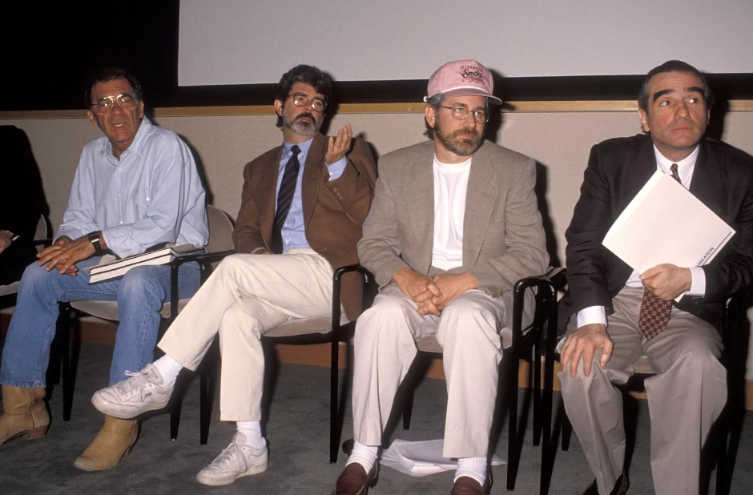

Saving Cinematic History
Established in 1990 by Martin Scorsese, The Film Foundation is a non-profit organization dedicated to protecting and preserving motion picture history. Scorsese created the foundation alongside other legendary directors like Steven Spielberg and Francis Ford Coppola after realizing that many classic films were physically rotting away due to poor storage and deteriorating film stock.
The Art of Restoration
Film restoration is a highly technical process that involves cleaning original negatives, repairing physical tears, and digitizing the frames at high resolutions. The Foundation works with major film archives and studios to ensure that the colors and sounds of these films are returned to their original theatrical quality, allowing new generations to experience them as the directors originally intended.
World Cinema Project
Beyond American classics, Scorsese expanded the mission through the World Cinema Project . This initiative specifically targets films from regions with fewer resources for preservation, such as Africa, Latin America, and Central Asia. By providing the funding and technology needed to save these cultural treasures, Scorsese has helped ensure that the global history of cinematic storytelling remains diverse and accessible to all.